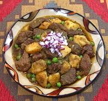

|
Beef SecoPeru - Seco de Carne | ||||
| Makes: Effort: Sched: DoAhead: |
5 main *** 2-3/4 hrs Yes |
Typical of the Comida Criolla of coastal Peru, Secos are very popular. they are usually made from beef, chicken or goat, but it's not unheard of to use other meats, or fish, or just vegetables. | |||
|
2 8 3 1-1/2 3/4 1/3 1/2 1/2 4 2 1 1 1 1/3 |
# oz cl # c c c t T T T c t t |
Beef, Lean (1) Onion Garlic Potatoes (2) Cilantro (3) Water Peas, frozen Cumin Olive Oil Olive Oil (more) Aji Amarillo Paste (4) Water Salt Pepper, black |
As shown in the photo, the ingredients are cut for buffet service, see Service for table service. Prep - (55 min)
|
amm_cowseco1 170909 epc178 - www.clovegarden.com
©Andrew Grygus - agryg@aaxnet.com - Linking to and
non-commercial use of this page is permitted.